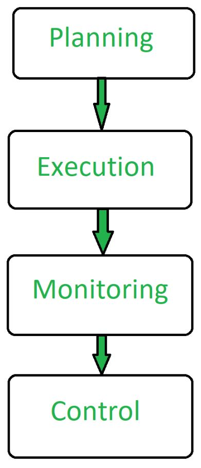

3.1 Software Project Management — Overview
Software Project Management (SPM) is the disciplined application of knowledge, skills, tools, and techniques to plan, organise, monitor, and control a software development project so that it delivers the required product on time, within budget, and to the agreed quality. Unlike writing code for a single program, SPM deals with coordinating people, schedules, costs, risks, and stakeholder expectations across the entire software lifecycle introduced in Topic 2 §2.1.
Software projects are especially vulnerable to failure when management is weak. Common causes include inadequate planning and monitoring, lack of risk assessment, unrealistic deadlines, inefficient resource allocation, and selection of the wrong technology or SDLC model. SPM exists to reduce these failures by making development predictable and measurable rather than ad hoc.

Four core activities of SPM
At its heart, Software Project Management is a repeating cycle of four connected activities:
- Planning: The manager defines project goals, scope, schedule, budget, and the strategy for how work will be done before development starts.
- Execution: The team carries out the planned work — requirements, design, coding, testing, and delivery — while the manager coordinates people and resources.
- Monitoring: The manager continuously tracks progress, cost, effort, and quality against the plan to detect slippage or deviations early.
- Control: When monitoring reveals a gap, the manager takes corrective action — adjusting scope, schedule, resources, or approach — to bring the project back on track.
These four activities repeat throughout the project lifecycle. Monitoring and control run alongside execution, not only after it. The full five-phase management process in §3.2 expands on this cycle in more detail.
Why SPM matters in Software Engineering
Software is intangible — you cannot physically watch it being assembled like a car on a production line. Progress is therefore harder to observe, and schedule slippage is one of the most frequent project risks. SPM provides the structures (plans, milestones, metrics, reviews) that make invisible work visible and keep the project aligned with business goals. It connects directly to the themes of managing complexity and reducing risk from Topic 1 §1.13.
Core objectives of SPM
The project manager and the management process aim to achieve the following throughout the project:
- Scope management: Deliver exactly what was agreed in the requirements — no more, no less — and control scope creep through formal change control.
- Time management: Produce realistic schedules, track milestones, and recover when tasks slip.
- Cost management: Estimate and control development cost so the project stays within the approved budget.
- Quality management: Ensure the product meets functional and non-functional requirements and passes agreed testing gates.
- Resource management: Assign the right people, tools, and computing resources to tasks at the right time.
- Risk management: Identify threats early, prioritise them, and apply mitigation before they derail the project (see §3.8).
- Stakeholder communication: Keep customers, sponsors, and the development team informed so expectations stay aligned.
SPM vs general project management
SPM shares the same fundamental principles as project management in other industries — planning, leading, organising, and controlling — but software projects add unique challenges: rapidly changing requirements, intangible deliverables, high dependence on skilled personnel, and technology that may be unproven. These factors make estimation harder and make SPM a specialised discipline within Software Engineering.
Q: What is Software Project Management? Why is it needed, and what are its main objectives?
Model answer points:
- Define SPM as planning, organising, monitoring, and controlling software projects to deliver on time, within budget, and to required quality.
- Explain that software is intangible, making progress hard to track and schedule slippage a major risk.
- List objectives: scope, time, cost, quality, resource, risk, and stakeholder management.
- Link to poor project management as a cause of the software crisis and project failure.
- Mention that SPM applies across the SDLC, not only during coding.